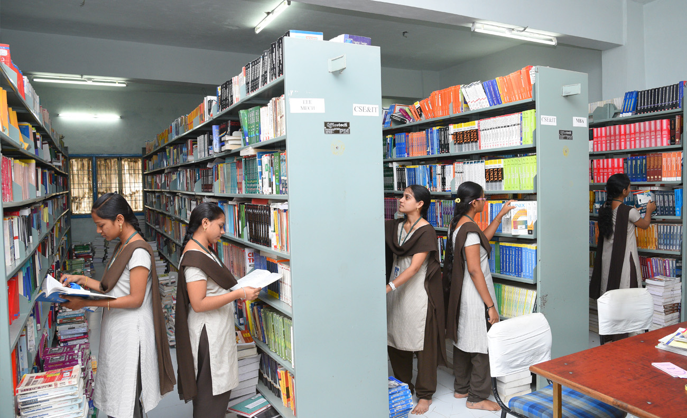

COLLEGE LIFE is MEMORABLE
 College life is known as one of the most memorable years of one’s life. It is entirely different from school life. College life exposes us to new experiences and things that we were not familiar with earlier. For some people, college life means enjoying life to the fullest and partying hard. While for others, it is time to get serious about their career and study thoroughly for a brighter future.Nonetheless, college life remains a memorable time for all of us. Not everyone is lucky enough to experience college life. My Favourite moment was spending time with my friends and knowing various things which I have ever known.We have waited a long for fest and buzz in college but due to COVID , we are apart and have no fest.I had spent a lot in Library in KITS college , the fun we have in reading books and combine studies are more memorable.